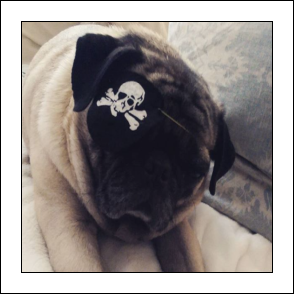

Alexis Arando
FULLSTACK DEVELOPERWelcome to my portfolio! I am a fullstack developer that wear many hats. I am a firm believer that a polished presentation is just as important as functionality and that is what I strive to deliver with every project
About Me

My Story
I am trained as a full stack developer, but my passion is developing beautiful designs and a functional user interface. It is my personal belief that a polished presentation is just as important as functionality and I always strive to incorporate that into my work. A lot of my initial training was self-taught using online tutorials and lots of practice. Growing up, I have always been interested in art (painting, drawing, etc.) As I got older, I started to dabbled into graphic design but ultimately felt a bit limited. I wanted to expand my skillset, so I started teaching myself web design and my interest took off from there. My sister who has been a huge support and mentor encourage me to get formal training so that i could expand my knowledge.I took her advice and enrolled at UC Berkeley fo a full stack development training. During my training, it opened some new posibilites and I gained incredible knowledge where I am no longer limited to just developing the front-end user interface. I can develop the backend, the middleware as well as the frontend. As a bonus, I can do graphic design, so I guess I am a developer that wear many hats.
Aside from managing a full-time job and continuous goal to enhance my coding skills, I get to do my other two favorite tasks which is be proud pug mom to my dog Rupert (featured on the left) and I am also an honorary cool aunty to two little boys. I would like to one day be able to transfer my knowledge over to them so that was part of the reason i pursued a full stack development training instead of just focusing on a front end
Skills
- HTML
- CSS
- JAVASCRIPT
- JQUERY
- REACT
- AJAX
- WEBPACK
- BOOTSTRAP & ZURB FOUNDATION
- RESPONSIVE/ SEO DESIGNS
- NODE JS
- OBJECT ORIENTED PROGRAMING
- EXPRESS
- MYSQL
- MONGODB
- MVC
- MERN
- PROGRESIVE WEB APPS
- STATE MANAGEMENT
- PHOTOSHOP
- HEROKU
- ROBO 3T
- MYSQL WORKBENCH
- POSTMAN
- GITBASH
- VISUAL STUDIO CODE
- GITHUB